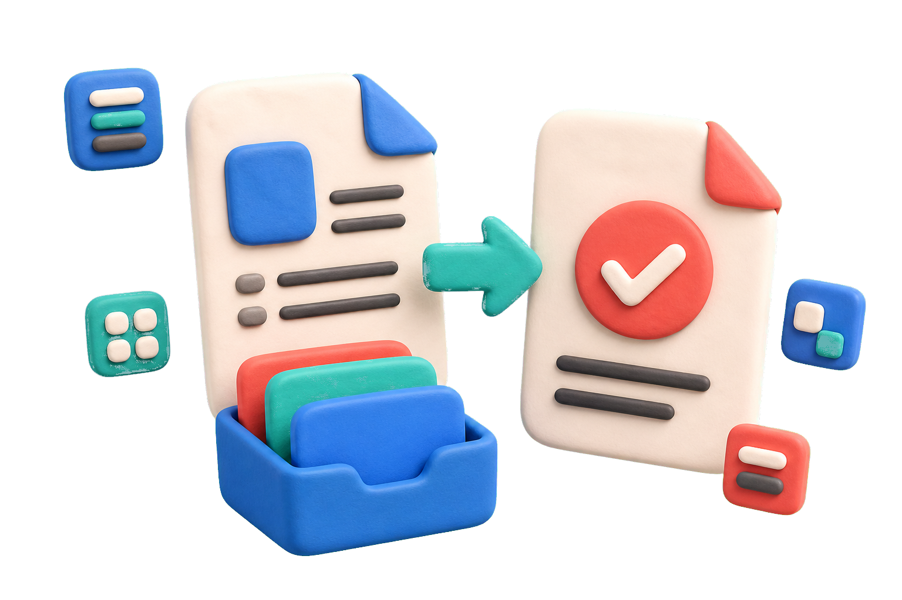

保留版式
转换时关注字体、图片、表格、链接、页眉页脚和分页，减少发给别人后排版变化的问题。
上传 Word 文档，把 DOC 或 DOCX 保存为 PDF。适合简历、合同、报告、讲义和需要固定版式的文件。Kollab 会把文件、转换要求和输出结果放在同一个任务中，方便检查、修改和分享。

普通转换器只给你一个下载按钮。Kollab 更适合需要检查、修改和交付的文档工作流。
转换时关注字体、图片、表格、链接、页眉页脚和分页，减少发给别人后排版变化的问题。
你可以说明是否隐藏批注、接受修订、生成 PDF/A、压缩文件或准备打印版本。
转换后的 PDF 可以继续进入 Kollab 的其他任务，例如压缩、摘要、提取 Markdown 文档或生成交付说明。
如果你想知道 how to save a word document as a pdf，可以直接上传文件在线转换，也可以参考下面的手动保存方法。
选择 DOC、DOCX 或 RTF 文件。简历、合同、报告和表格文档都可以开始处理。
告诉 Kollab 是否需要保留批注、接受修订、生成 PDF/A、压缩体积或保留链接。
Kollab 会把文件、指令和输出放在同一任务中，便于回看上下文和继续修改。
确认分页、图片、表格、页码和链接无误后，下载可分享、打印或归档的 PDF。
如果你想在 Microsoft Word 里手动完成，下面是不同设备上的常见路径。
这些问题最容易造成“我明明转成 PDF 了，但发出去不对”的情况。
从“保存为 PDF”的简单动作，延伸到真实的文档交付场景。
避免招聘系统或收件人电脑上的字体差异影响版式。
固定条款、签名区、页码和附件顺序，便于发送和归档。
保留目录、脚注、图片编号、表格和引用链接。
把讲义、手册和操作文档变成更容易分享的 PDF。
检查横向页面、跨页表格、页边距和打印区域。
选择 PDF/A、压缩或加密，把文档整理成可长期保存的版本。
Word 转 PDF 之后，可以继续处理你的文档。
覆盖 SERP 中最常见的 long-tail 搜索需求。
在 Word 中打开文件，选择“文件”里的“另存为”或“保存副本”，文件类型选择 PDF 后保存。也可以上传 DOC、DOCX 文件到 Kollab 在线转换。
可以。你可以使用在线工具上传 Word 文件并转换为 PDF。对于重要文档，建议转换后检查分页、字体、图片和表格。
大多数文档可以保留格式。复杂文档需要特别检查字体、横向页面、跨页表格、图片清晰度、页眉页脚和目录链接。
在 Word 应用中打开文档，通过分享、导出或打印菜单选择 PDF，然后保存到文件或发送给他人。
PDF/A 是适合长期归档的 PDF 标准。合同、档案、正式报告和需要长期保存的文件，可以考虑导出为 PDF/A。
取决于导出设置。如果文档含有批注或修订，建议先确认是否需要接受修订、隐藏批注，或生成带标记的审阅版本。
上传文件，说明转换要求，Kollab 会帮你把文档、上下文和输出结果放在一起。